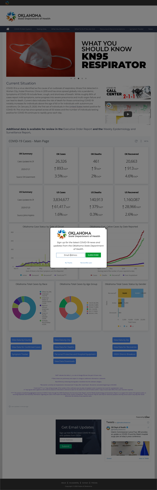
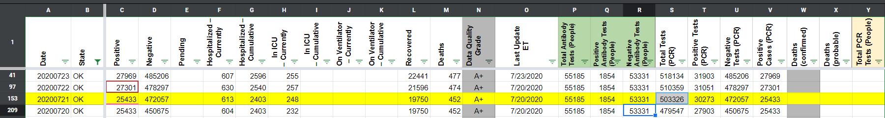
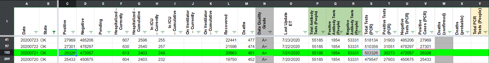

[OK] Page updated after Pub Shift 7/21
Issue number 663
hmhoffman opened this issue on July 23, 2020 at 1:48 pm
Describe Issue On 7/21 the OK page did not update before we published. They updated later that evening and we caught it in our last screenshot. We need to patch cases, deaths, and recoveries.
Data Source Screenshot from 6:21 pm on 6/21 
the-daniel-lin closed the issue on July 24, 2020 at 7:33 am
BEFORE: 
Noticed that there were three consecutive 7/20’s, and they had updated values for each. Changed them to 7/20, 7/21, 7/22, accordingly.
AFTER: 